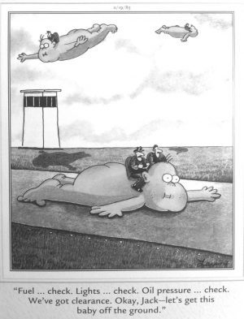

If these kinds of things existed in my country, I wouldn’t need to be running for President to fix everything up.
Elizabeth Warren
The only thing that didn't leave a nasty taste in my mouth last year was the food.
Barry the hypothetical troll from last year (He's been debunked, defrocked, unfriended and univited this year)

You may not be in that exclusive group of less than 200 people in Australia who have been to one of my dinners for refugees. But whether you're Donald Trump or Douggie Hourigan,[1. My friend in Grade One – where are you Douggie?] you'll have heard of them. I can tell you they're a blast. Born out of a birthday party that went strangely right, I have made this an annual event since. Each function has been in support of refugees. The basic idea of the dinner is to meet interesting people, have fun and raise a decent amount of money for refugees. Last year, with Christos Tsiolkas as our guest of honour, we raised over $10,000 for the Asylum Seeker Resource Centre and, in so doing helped them establish a program to train refugees to become program evaluators. I'm thrilled to say that that this is now bearing fruit. This year, as with the first year, we're raising money for Urban Refugees. It targets the refugees who are outside the UNHCR process and the protections it affords – that is the millions of refugees living not in refugee camps, or in host countries but largely on the outskirts of cities of the low and middle income world like Kuala Lumpur and Kampala. It will mostly be dinner and meeting and talking to friends and interesting people you’ve not met before, but Santo Cilauro from Australia's best TV production company Working Dog will be our guest of honour and we'll hear from him. We’re inviting you to pay your way at $60 which will include approximately $25 which will be receipted as tax deductible donation. [1. The bloodsuckers of our financial services industry will impose upon you a fee of 30 cents plus approx 1.75% on your payment.] So Book Now for 7.00 pm on Thursday Sept 12th at Tazios on this link. And NOTE: Though it's still on Flinders Lane, Tazios has moved since last year's dinner. I’m also hoping you can make an additional tax deductible donation. In fact I'm so hanging out for you to donate that, as in other years, I'll match every dollar you donate over $100 up to a total liability of $5,000 for me. [1. Note the bloodsuckers of finance will subtract 30 cents plus approx 1.75% of your payment and you'll receive a receipt for the rest. This is altogether fitting and proper given their commitment to making the world a better place for all the little people.] (In the first year, Ross Gittins decided to play hard-ball and try to bankrupt me with a thousand dollar donation which took $900 out of my pocket right there! Bring it on I say! I'm planning to sponge off my kids in retirement in any event.) If you're making a donation of over $200 (that's over $300 with my matching donation) and would like to, please feel free to email me on ngruen AT gmail and I'll send you my bank account details so you can avoid all charges. The first donor of over $500 will be flown First Class to London where they'll be chauffeured by Theresa May driving the trusty Aussie hot rod 'Rooter' (How good is Rooter?) and taken to dinner with Boris Johnson who will arrive late with carefully towselled, bleached hair. And there’s a special deal for those from out of town. They can make an even larger donation as they don't have to pay for dinner. And please pass this invitation around.
Nicholas, was this what she said. I mean, was it accurately translated from Hindu, or, or is that Sioux?
It's translated from the original Pocahontese
Still self-describing as a radical-centrist? :-)
I'm not sure what you're getting at but where did I do that?